Cuerpo Travesía
El cuerpo recorre la nave.
El tejido transforma el espacio.
La participación deja una huella.
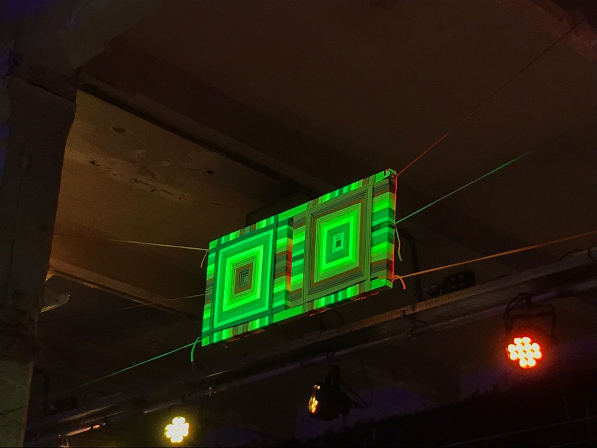
De la pieza
al espacio.
Cuerpo Travesía parte del trabajo manual y lo desplaza a la escala de la nave. Entre las columnas, los planos de trapillo construyen límites permeables: separan sin cerrar y orientan el recorrido.
La trama se convierte en una arquitectura blanda. Sus vacíos dejan ver lo que ocurre al otro lado; sus tensiones y fragmentos de color hacen visible el gesto de tejer.
La obra se recorre,
se rodea y se atraviesa.
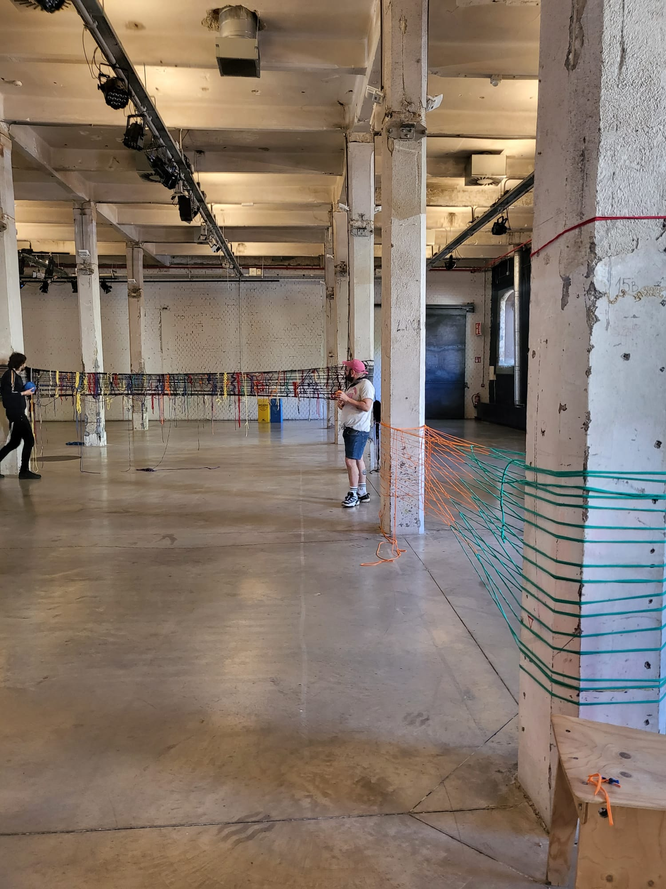
La nave como bastidor.
Una estructura ligera, manual y reversible, apoyada en el ritmo de las columnas.
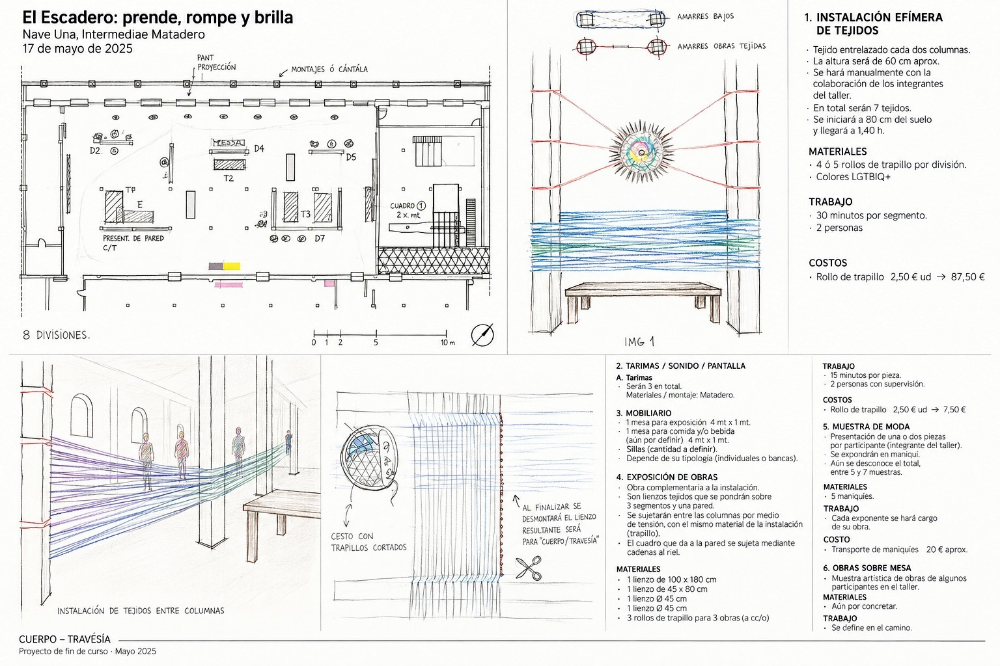
Siete tramos
La propuesta distribuye el tejido entre pares de columnas y aprovecha la estructura de la nave como soporte.
0,80–1,40 m
Alturas aproximadas previstas en el documento de proyecto, vinculadas a la relación entre trama, mirada y cuerpo.
Un conjunto de relaciones
El plano articula tejido, exposición, mobiliario, tarimas, sonido, pantalla y recorrido.
Las cotas y los siete tramos corresponden a la propuesta original de mayo de 2025.
Cómo se construye
una travesía.
- 01
Leer la nave
Reconocer soportes, distancias y recorridos.
- 02
Preparar las piezas
Construir la trama mediante repetición, nudos y color.
- 03
Tensar y montar
Situar el tejido en relación con las columnas y el espacio.
- 04
Tejer y recorrer
Incorporar la acción del público a la experiencia.
- 05
Recoger la memoria
Desmontar y conservar el tejido y el registro del encuentro.
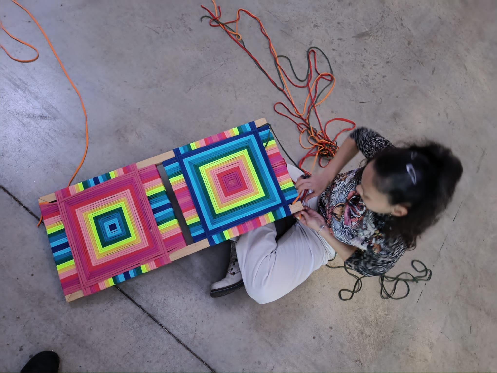
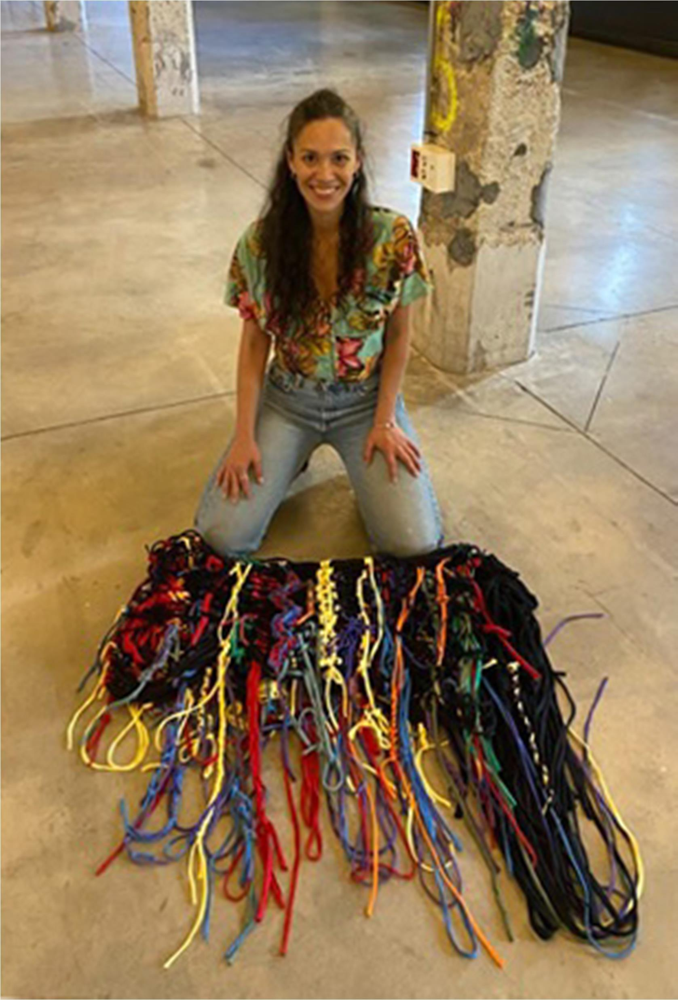
El público completa
la instalación.
Cada nudo incorpora una acción al conjunto. Cada recorrido establece una relación distinta con la trama.
Durante la presentación, el tejido funciona como una estructura abierta. Las personas se acercan, observan, participan y modifican la lectura del espacio con su presencia.
Nudos, tensiones y fragmentos de color registran el trabajo compartido. Al desmontarse la instalación, el tejido permanece como memoria material del encuentro.
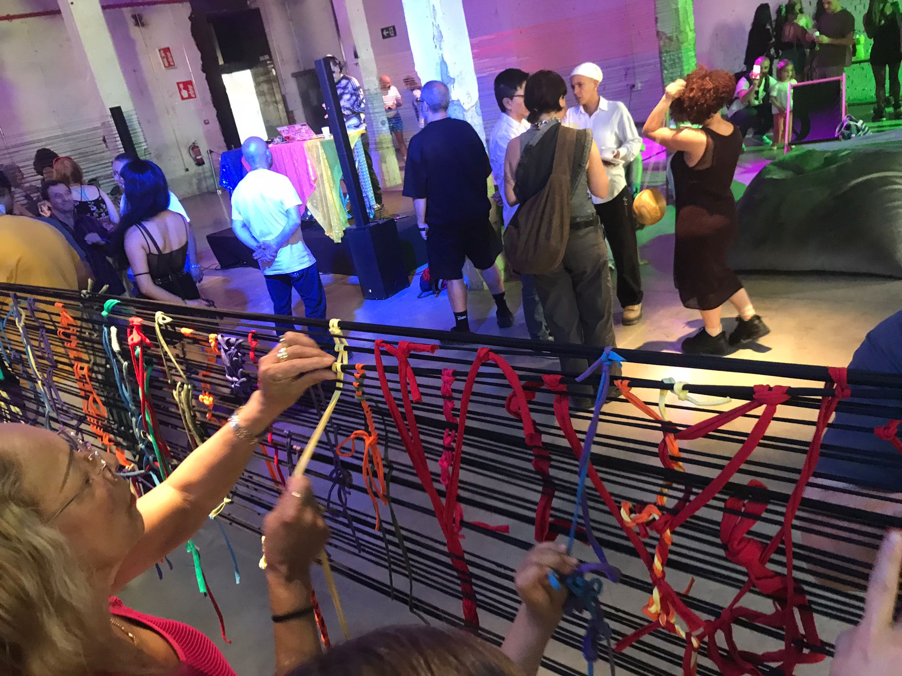
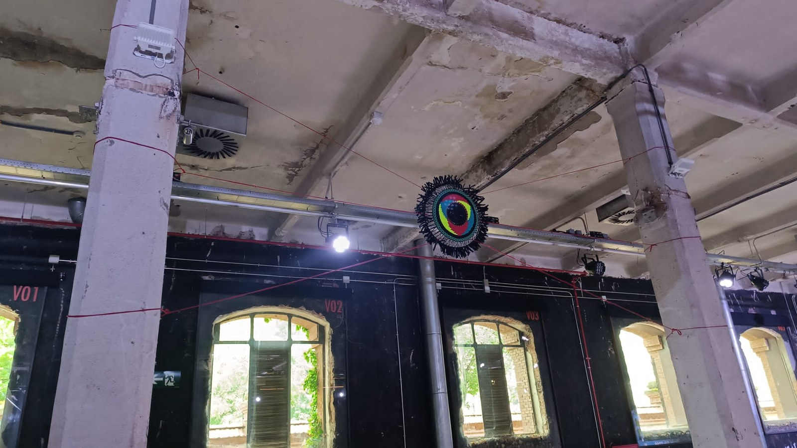
Una travesía
en otro lugar.
La presentación en Matadero es el punto de partida para proponer nuevas instalaciones en ferias y espacios de arte. Cada adaptación requiere estudiar el lugar y la forma de participación.
- EspacioLeer los soportes, las circulaciones y las zonas de encuentro.
- MontajeAcordar anclajes y tensiones con el equipo del espacio anfitrión.
- ParticipaciónDefinir materiales, acompañamiento y tiempos para tejer en común.
- MemoriaPlanificar el desmontaje y el registro de la acción colectiva.
El proyecto completo.
Dosier de ocho páginas con concepto, proceso, sistema espacial y participación. Disponible en PDF y como presentación editable.
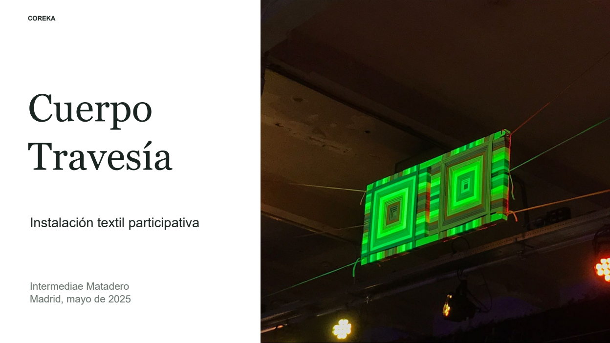
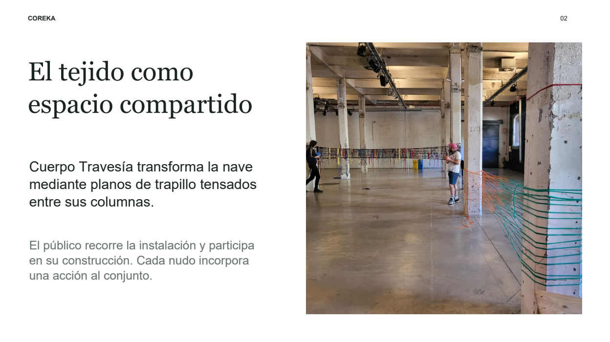
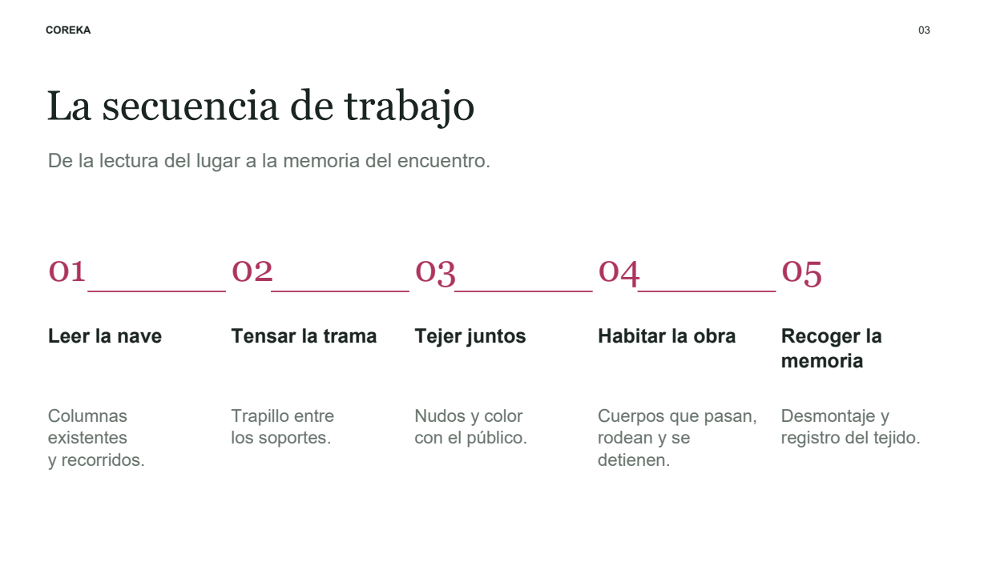
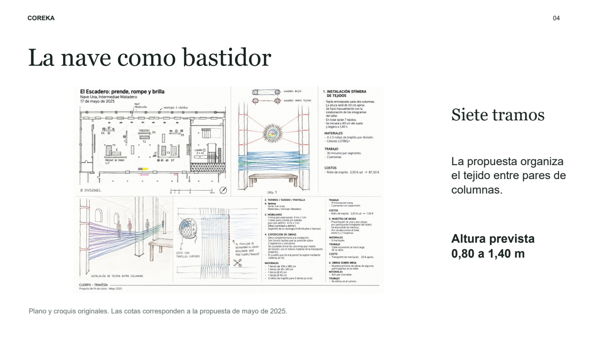
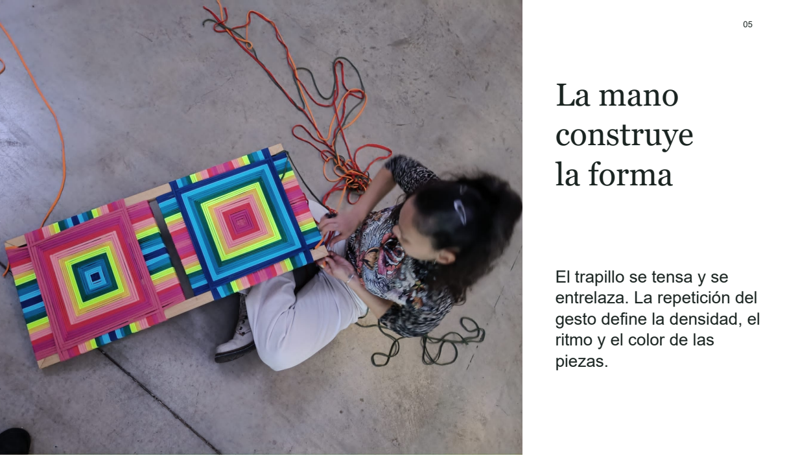
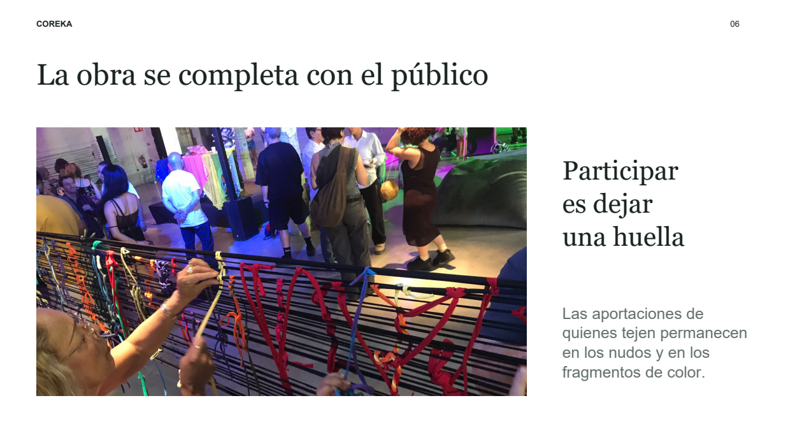
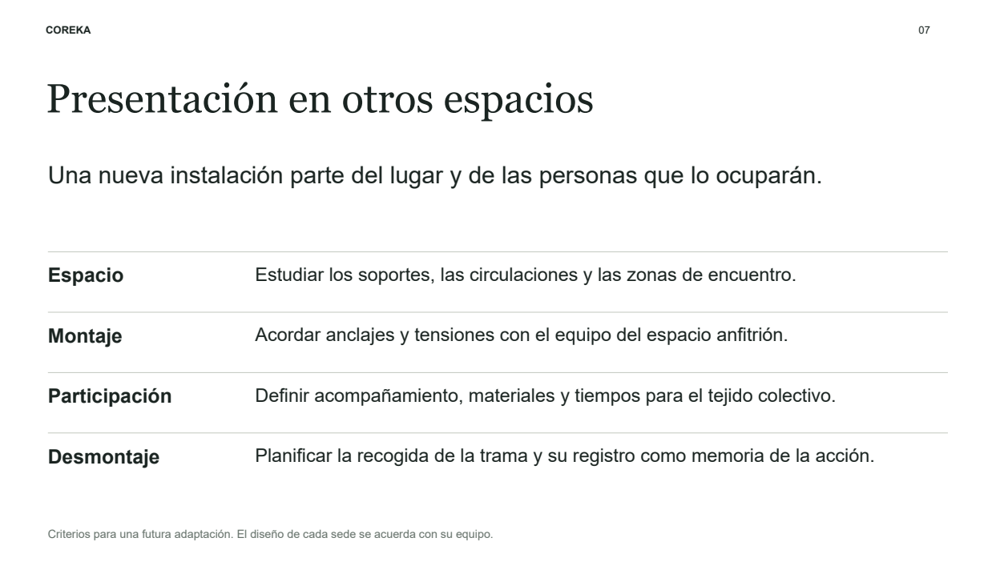
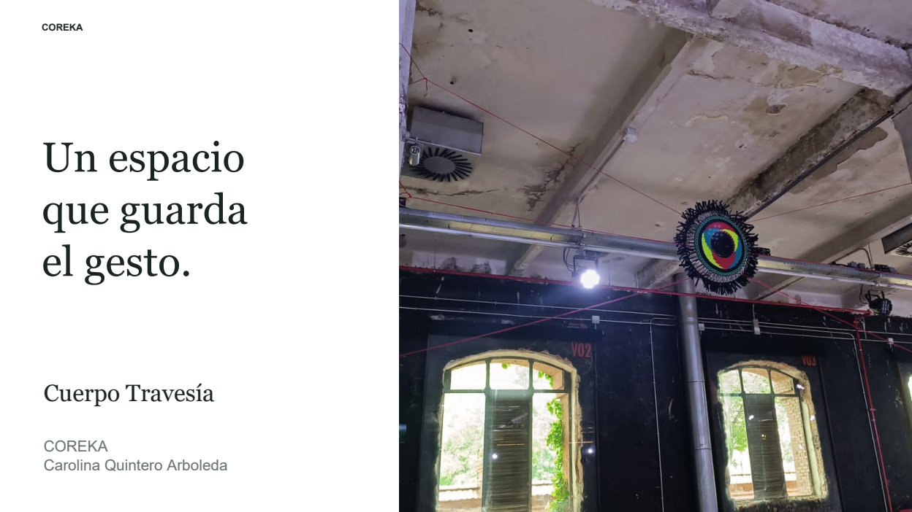
CONSULTAR LOS DOCUMENTOS ORIGINALES
Documentación del proyecto de fin de curso presentado en mayo de 2025.